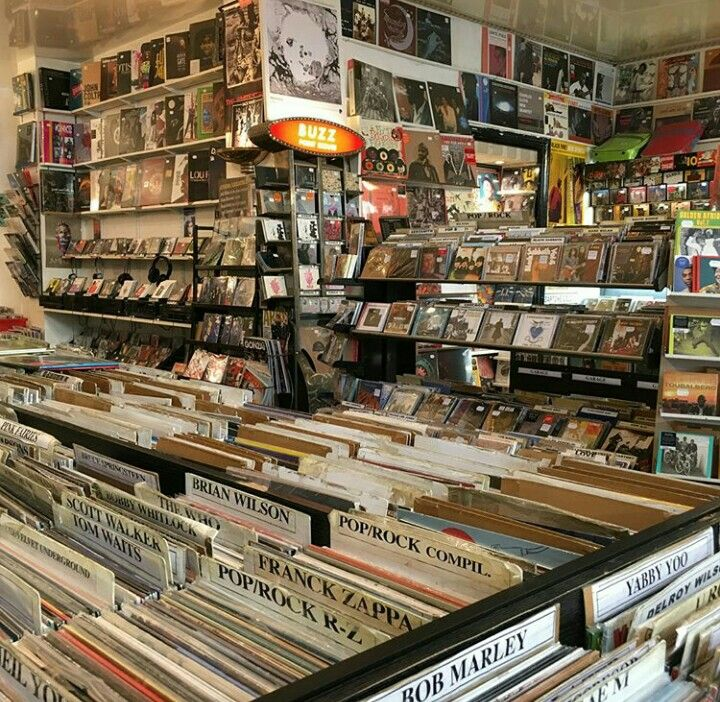

Loud and Clear Records
Welcome to Loud and Clear Records, your ultimate destination for discovering, purchasing,
and enjoying a diverse collection of music records from around the globe.
Whether you’re a seasoned audiophile, a casual listener, or a music enthusiast seeking
the perfect gift, Loud and Clear Records offers something for everyone.
Here's what we have to offer:
-
Extensive Catalog: Explore a vast array of vinyl records spanning various genres!
From classical to iconic albums, we have it!
-
User-Friendly Interface: Navigate through our well-organized website with ease.
Our intuitive search and filtering options allow you to quickly find records.
-
High-Quality Pressings: We take pride in offering high-quality
vinyl pressings, ensuring that you receive the best sound experience.
Each record is carefully inspected before shipment, guaranteeing that you receive
only the finest products.
-
Community Engagement: Join our vibrant community of music lovers!
Participate in discussions, read reviews, and share your thoughts on our
interactive platform. Our blog features artist interviews, album reviews, and
tips for vinyl care, providing you with a rich music experience.
-
Subscription Service: Sign up for our monthly subscription
service and receive a curated selection of records delivered right to your door.
Tailored to your music preferences, it’s the perfect way to discover new favorites
and expand your collection.
-
Gift Cards and Bundles: Looking for a gift? Choose from a variety of gift cards
or special vinyl bundles designed for every occasion, from birthdays to holidays.
-
Secure Shopping: Shop with confidence! Our secure payment options and
hassle-free return policy ensure that your online shopping experience is safe
and satisfactory.
At Loud and Clear Records, we believe that music is more than just sound;
it’s an experience that connects us all. Join us today and dive into the
world of vinyl records—where every spin tells a story!

Read About How Vinyls Are Back!